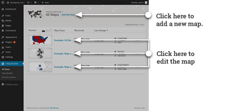
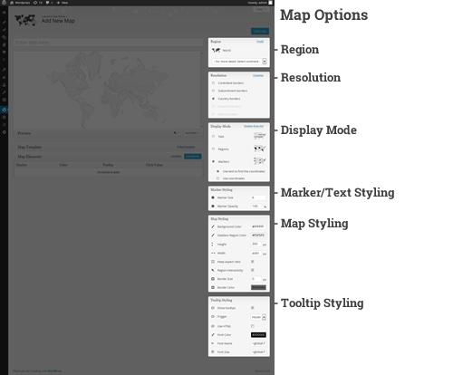
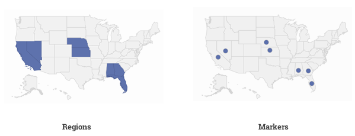
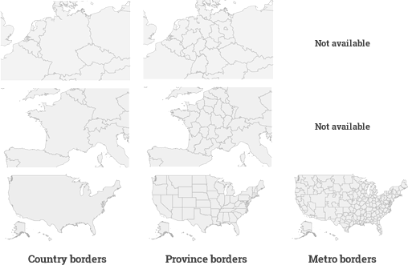
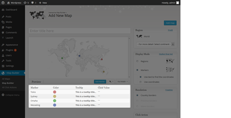
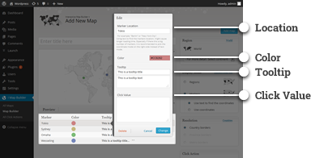
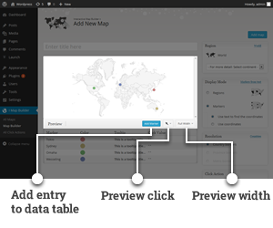
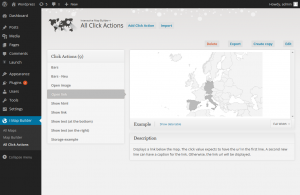
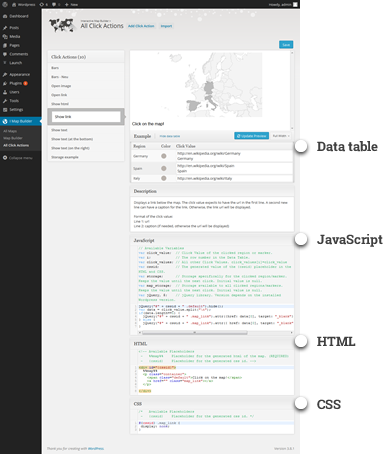

| Created: | 03/23/2014 |
|---|---|
| By: | Fabian Vellguth |
| Plugin Site: | meisterpixel.com/interactive-map-builder |
| Email: | info@meisterpixel.com |
Thank you for purchasing my plugin. If you have any questions that are beyond the scope of this help file, please feel free to email via my user page contact form here. Thanks so much!
The installation procedure is similar to other plugins:
InteractiveMapBuilder to the /wp-content/plugins/ directoryWhen the plugin is activated for the first time, it will automatically create some sample maps. When you click on "I Map Builder", the screen will probably look like the following picture. From this page you can start to edit one of the examples or you could start to create your own first map.

In both cases the Map Builder will open. Section D) describes the Map Builder in more detail.
The map can be included in your pages and posts by inserting the corresponding shortcode. You can find this shortcode for every map on the "All Maps" page. Find the map and copy the text from the "Shortcode" column. It should have the following format:
[interactive_map id="1"]
Note that the id is different for each map.
The Map Builder is the most important tool of this plugin. It is used to create or edit maps. The Map Builder page can be divided into three sections:
All available map options are located on the right side. The following picture gives an overview:

The region specifies the displayed area of the map. It allows to focus the map on the
The default value is the world map. To focus the map on a smaller area, select a continent from the select field.
After selecting a continent, a new field should appear, showing a list of subcontinents. The selection of a subcontitent allows
you to select a country.
Note that provinces are only available for the United States.
The following two tables show a complete list of all available regions. Together with the world map there are currently 315 regions to choose from:
| Continents (5) | Sub-Continents (22) | Countries (236) |
|---|---|---|
| Africa | Northern Africa | Algeria, Egypt, Western Sahara, Libya, Morocco, Sudan, Tunisia |
| Western Africa | Burkina Faso, Benin, Côte d'Ivoire, Cape Verde, Ghana, Gambia, Guinea, Guinea-Bissau, Liberia, Mali, Mauritania, Niger, Nigeria, Saint Helena, Sierra Leone, Senegal, Togo | |
| Middle Africa | Angola, Congo, Central African Republic, Congo, Cameroon, Gabon, Equatorial Guinea, Sao Tome and Principe, Chad | |
| Eastern Africa | Burundi, Djibouti, Eritrea, Ethiopia, Kenya, Comoros, Madagascar, Mauritius, Malawi, Mozambique, Réunion, Rwanda, Seychelles, Somalia, Tanzania, Uganda, Mayotte, Zambia, Zimbabwe | |
| Southern Africa | Botswana, Lesotho, Namibia, Swaziland, South Africa | |
| Europe | Northern Europe | Guernsey, Jersey, Åland, Denmark, Estonia, Finland, Faroe Islands, United Kingdom, Ireland, Isle of Man, Iceland, Lithuania, Latvia, Norway, Sweden, Svalbard and Jan Mayen |
| Western Europe | Austria, Belgium, Switzerland, Germany, France, Liechtenstein, Luxembourg, Monaco, Netherlands | |
| Eastern Europe | Bulgaria, Belarus, Czech Republic, Hungary, Moldova, Poland, Romania, Russia, Slovakia, Ukraine | |
| Southern Europe | Andorra, Albania, Bosnia and Herzegovina, Spain, Gibraltar, Greece, Croatia, Italy, Montenegro, Macedonia, Malta, Serbia, Portugal, Slovenia, San Marino, Holy See (Vatican City State) | |
| Americas | Northern America | Bermuda, Canada, Greenland, Saint Pierre and Miquelon, United States |
| Caribbean | Antigua and Barbuda, Anguilla, Aruba, Barbados, Saint Barthélemy, Bahamas, Cuba, Dominica, Dominican Republic, Grenada, Guadeloupe, Haiti, Jamaica, Saint Kitts and Nevis, Cayman Islands, Saint Lucia, Saint Martin (French part), Martinique, Montserrat, Puerto Rico, Turks and Caicos Islands, Trinidad and Tobago, Saint Vincent and the Grenadines, Virgin Islands (British), Virgin Islands (U.S.) | |
| Central America | Belize, Costa Rica, Guatemala, Honduras, Mexico, Nicaragua, Panama, El Salvador | |
| South America | Argentina, Bolivia, Brazil, Chile, Colombia, Ecuador, Falkland Islands (Malvinas), French Guiana, Guyana, Peru, Paraguay, Suriname, Uruguay, Venezuela | |
| Asia | Central Asia | Turkmenistan, Tajikistan, Kyrgyzstan, Kazakhstan, Uzbekistan |
| Eastern Asia | China, Hong Kong, Japan, North Korea, South Korea, Mongolia, Macao, Taiwan | |
| Southern Asia | Afghanistan, Bangladesh, Bhutan, India, Iran, Sri Lanka, Maldives, Nepal, Pakistan | |
| South-Eastern Asia | Brunei, Indonesia, Cambodia, Laos, Myanmar, Malaysia, Philippines, Singapore, Thailand, Timor-Leste, Vietnam | |
| Western Asia | United Arab Emirates, Armenia, Azerbaijan, Bahrain, Cyprus, Georgia, Israel, Iraq, Jordan, Kuwait, Lebanon, Oman, Palestine, State of, Qatar, Saudi Arabia, Syria, Turkey, Yemen | |
| Oceania | Australia and New Zealand | Australia, Norfolk Island, New Zealand |
| Melanesia | Fiji, New Caledonia, Papua New Guinea, Solomon Islands, Vanuatu | |
| Micronesia | Federated States of Micronesia, Guam, Kiribati, Marshall Islands, Northern Mariana Islands, Nauru, Palau | |
| Polynesia | American Samoa, Cook Islands, Niue, French Polynesia, Pitcairn, Tokelau, Tonga, Tuvalu, Wallis and Futuna, Samoa |
| Provinces (51) | |
|---|---|
| United States | Alabama, Alaska, Arizona, Arkansas, California, Colorado, Connecticut, Delaware, Florida, Georgia, Hawaii, Idaho, Illinois, Indiana, Iowa, Kansas, Kentucky, Louisiana, Maine, Maryland, Massachusetts, Michigan, Minnesota, Mississippi, Missouri, Montana, Nebraska, Nevada, New Hampshire, New Jersey, New Mexico, New York, North Carolina, North Dakota, Ohio, Oklahoma, Oregon, Pennsylvania, Rhode Island, South Carolina, South Dakota, Tennessee, Texas, Utah, Vermont, Virginia, Washington, West Virginia, Wisconsin, Wyoming, District of Columbia |

The display mode specifies the data that you want to display. If you want to highlight the shapes of countries
or provinces, then you have to select the region mode. For the United States, it is also possible
to highlight metro areas. In this case, it is required to set the resolution (in 1.3) to metro borders.
If you want to create a map with markers, then you have two choices. The markers from text option
allows to set the location by passing a string (for example, "1600 Pennsylvania Ave" or "New York City"). When the
map is loaded, the string will be used to find the location of the marker. If you have many markers on the map, this
can cause the markers to appear after a delay.
In the markers from coordinates mode, you can set the location by passing the latitude and longitude.
The main advantage is that the markers appear when the map is loaded. So it is recommended to pick this mode. Even if
you don't know the coodinates, the form of the data table allows you to search for the coordinates by clicking on
"Find coordinates".
This option specifies the resolution of the map borders. The following values are available:
Note that the value might change automatically if you select a region. Also note that the values are disabled if they are not available.

This option allows to select a click action. If you want nothing to happen when a marker or region is clicked, then select "None".
The following options are available:
If the map displays markers, the following options are available for the appearance:
The following options are available:
Note that tooltips are only available for regions and markers from the data table. The tooltip title and text for a given marker or region can be changed in the data table form.
The data table contains all the markers or regions that you want to display on the map. The appearance of the data table might change with the selected display mode (in 1.2).

To edit an entry from the table, you have to click on the row. A form should appear and should look like this:

You can edit the following values:
The preview renders the map for the given data and options. It updates automatically when an option or the data table changes. The following picture shows the preview area:

The following options can be set for the preview area:
Note also that these options only affect the preview. When the map is inserted somewhere later, the selected click action will always be executed. If you want to add a marker or region to the map, you can hit the button "Add marker" or "Add region". To edit a region or marker, it's often easier to click on the region or marker in the preview. Again, this only works when the region interactivity from the Map Options (1.5) is activated.
Click Actions allow you to add special behavior and custom styling to your map. To do so, you can add your own JavaScript, HTML and CSS.
The following picture shows the click actions page:

The click actions page is divided into 3 areas:
To edit a click action, you find the link "Edit" on top of the map container. The page will then switch to editing mode:

Besides the name and the description, there are four important values to edit.
There are three predefined countries for the example map: Germany, Spain and Italy. For each country, the click value can be edited. Note that these are the values that will be passed to the JavaScript when the region or marker is clicked.
Whenever a region or marker is clicked, the JavaScript code will be executed. This allows to add special behavior to your map. This can depend on the given click value. Besides the click value, there are also predefined variables for your JavaScript code. These are:
var click_value; | // Click Value of the clicked region or marker. |
|---|---|
var i; | // The row number in the Data Table. |
var click_values; | // All other Click Values. click_values[i]=click_value |
var cssid; | // The generated value of the {cssid} placeholder in the HTML and CSS. |
var storage; | // Storage specifically for the clicked region/marker. Keeps the value until the next click. Initial value is null. |
var map_storage; | // Storage available to all clicked regions/markers. Keeps the value until the next click. Initial value is null. |
var jQuery, $; | // jQuery library. Version depends on the installed Wordpress version. |
//...your own code starts here... |
|
You can add your own HTML to the click action. This can be useful, if you want to display data somewhere around the map. There are two placeholder available for the HTML:
<div id="{cssid}">
</div>
This ensures that you don't conflict with other maps. You can easily find the element from your JavaScript with the following code:
jQuery("#" + cssid);
<div id="{cssid}">
%%map%%
</div>
The CSS has one placeholder:
#{cssid} {
}
Before saving, you can test the changes by clicking on "Update Preview". This reloads the example with the new data. A message box will appear, if there are errors in your JavaScript code.
The Text format is the only import method available for click actions. To import a click action, hit "Import" at the top of the click actions page. Insert the text and click on the "Import" button. The click action should automatically be inserted to the left menu.
To export a click action, make sure that the click action is selected in the left menu. Then hit the "Export" button above the map. A small window should open. Make sure that you copy the whole text from the textbox. Otherwise the import might fail, if you use an incomplete text.
Hit the button "Import" at the top of the "All Maps" page. A small window should open. The map can be importet in two ways:
If you click on the "Import" button, the import data will be passed to the Map Builder. To complete the import process, click on "Add map". Note that you might have to select a click action, because this is not imported.
If you want to import a map, you have to be aware that only the map is imported and not the selected click action. If you want to import both, we recommend to follow these steps:
To export a map, navigate to the "All Maps" page, hit the "More" button and click on "Export". A small window should open where you have to pick an export format. You have the following options:
To delete a map, navigate to the "All Maps" page, hit the "More" button and click on "Delete". A small window should open where you have to confirm the removal.
To copy a map, navigate to the "All Maps" page, hit the "More" button and click on "Create a copy". The copy should be created and the table will update automatically. The copied map will be marked with a "new" label.
Once again, thank you so much for purchasing this plugin. As I said at the beginning, I'd be glad to help you if you have any questions relating to this theme. No guarantees, but I'll do my best to assist. If you have a more general question relating to the plugins on CodeCanyon, you might consider visiting the forums and asking your question in the "Item Discussion" section.
meisterpixel.com
Go To Table of Contents - meisterpixel.com/interactive-map-builder